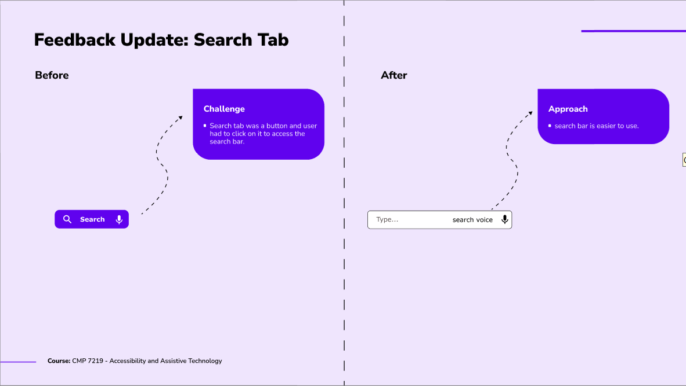

Parent Hub Case Study
Introduction
This report will discuss the web application called Parent Hub, designed with accessibility considerations in mind. This web application was created to promote connections between local parents. The goal of the Parent Hub is to help parents in the community support one another and make the parenting journey a happier one for themselves and their children.

The Problem
The academic literature in disability studies provides extensive information on the importance of accessibility as well as inclusive design. We still have a long way to go in terms of accessibility, and there are still too many barriers preventing people with disabilities from fully participating online.
Proposed Solution
The use of technology is possible to reach accessibility. The whole society also benefits from this. For instance, captions help people with hearing impairment and others who are in noisy situations. People with vision impairments and older users benefit from adequate colour contrast. Sensible design decisions are still important, despite the opportunities that technology provides to increase engagement. To ensure that the Parent Hub app meets the diverse needs of users and provides equal access for individuals with disabilities, the design process emphasized principles of inclusive and universal design based on WCAG 2.1.
Research
To ensure that the Parent Hub app meets the diverse needs of users and provides equal access for individuals with disabilities, the design process emphasized principles of inclusive and universal design based on WCAG 2.1. In the early stages, Personas representing potential users with varying impairments were created to guide the development. Prototypes were gradually developed based on academic research on accessible user interfaces and Internet accessibility standards. At the end of the design phase, users tested the final Figma design to improve accessibility.
Design Process
The design process for Parent Hub was methodical and user-centered, ensuring that accessibility was prioritized at every stage. Key steps included:
- Requirement Gathering: Engaged with parents, including those with disabilities, to understand their needs and preferences. Conducted surveys and interviews to gather insights.
- Personas and Scenarios: Created detailed personas representing users with different disabilities. Developed scenarios to explore how these users would interact with the app.
- Wireframing and Prototyping: Developed wireframes and prototypes with a focus on accessibility. Used tools like Figma to create high-fidelity designs that incorporated feedback from stakeholders.
- Accessibility Audit: Conducted an accessibility audit based on WCAG 2.1 guidelines. Identified potential barriers and made necessary adjustments to design and functionality.
- Iterative Design: Adopted an iterative approach, continuously refining the design based on user feedback and testing results. This ensured that the app remained user-friendly and accessible.
Features
The key features of the app are:
- Local Event Connection: Parents can use the Parent Hub website to find and attend a variety of regional events that match their interests and preferences. The platform also serves as a hub for neighborhood parenting events, allowing parents to find and connect with the possible events near them, from workshops and seminars to play dates and community gatherings.
- Group Formation and Collaboration: Parent Hub promotes the creation of parent communities around shared interests, such as particular age groups, parenting philosophies, or hobbies. As a result of the application's group creation and communication features, parents can connect with others who share their interests, share advice, and plan meetups or online chats in the area.
- Accessibility and Inclusion: Accessibility is one of the most important principles of the Parent Hub website. I tried to ensure that users with various disabilities can use this program without any problems. All parents—regardless of their physical, visual, cognitive, or hearing abilities—will have a great experience with this app because I put best practices and inclusive design principles into practice in this web application.
User Testing
User testing was a crucial component of the development process for Parent Hub. To ensure the app was truly accessible, the following steps were taken:
- Beta Testing: Released a beta version of the app to a group of diverse users, including those with various disabilities. Collected feedback on usability and accessibility.
- Accessibility Testing: Conducted thorough accessibility testing using tools such as screen readers, color contrast analyzers, and keyboard navigation checks. Ensured compliance with WCAG 2.1 standards.
- User Feedback Sessions: Organized feedback sessions with users to gather insights on their experience. Identified pain points and areas for improvement.
- Continuous Improvement: Implemented changes based on user feedback and retested the app to ensure improvements were effective. Maintained an ongoing feedback loop to keep the app updated and accessible. 